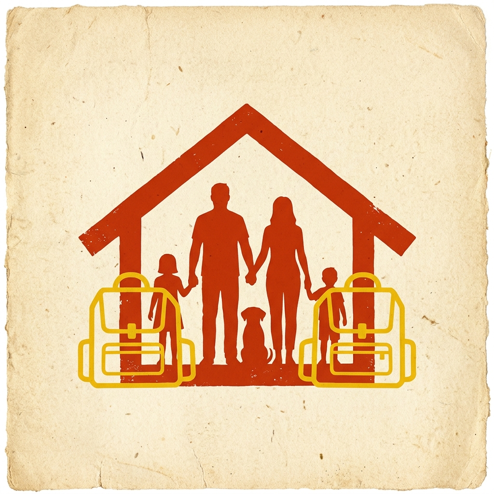

워크샵
참가자들은 재난 상황별로 필요한 준비물과 판단 지점을 적고, 서로 다른 생활 조건에서 누락되는 정보를 찾았습니다.
2025 Workshop + Prototype
재난가방을 물품 목록이 아니라 상황별 준비 경험으로 보고, 시민 워크샵에서 나온 페르소나와 시나리오를 서비스 프로토타입 방향으로 구체화했습니다.

Design Question
재난가방 안내는 보통 생수, 손전등, 의약품처럼 물품을 나열합니다. 하지만 실제 준비에서는 가족 구성, 아이의 연령, 이동 수단, 복용약, 반려동물, 대피소 체류 가능성에 따라 우선순위가 달라집니다.
참가자들은 재난 상황별로 필요한 준비물과 판단 지점을 적고, 서로 다른 생활 조건에서 누락되는 정보를 찾았습니다.
영유아 동반 가정, 고령자, 지병이 있는 사람, 반려동물 동반 가구처럼 준비물과 행동 순서가 달라지는 수요자를 구분했습니다.
준비물 목록, 사용 상황, 보호자 확인 질문, 공식 안내 링크가 한 흐름으로 이어지는 서비스 구조를 검토했습니다.
내부 발표자료를 그대로 올리는 대신, 시민용 점검표와 워크샵 진행 카드 형태로 다시 편집하는 것을 다음 산출로 둡니다.
Persona Insights
재난 발생 시 전기가 끊길 것을 대비하여 액상 분유와 일회용 젖병이 필수적입니다. 또한, 양손을 자유롭게 해 피난 속도를 올릴 수 있는 신체 밀착형 아기띠가 가방 무게보다 중요하게 다루어졌습니다.
혈압약, 당뇨약 등 매일 복용해야 하는 필수 약품의 1~2주일치 여분과 의사 처방전 사본(혹은 스마트폰 사진 보관)이 생수보다 우선순위에 배치되었습니다. 대피소 내 의약품 지원 한계를 고려한 결과입니다.
반려동물 동반 입소가 제한되는 대피소가 많기 때문에, 동반 가능 대피소 사전 파악과 함께 사료, 이동식 식기, 동물등록 번호가 기재된 인식표가 핵심 대피 정보 카드로 분류되었습니다.
가족 구성과 이동 조건에 따라 꼭 필요한 물품과 들 수 있는 무게가 달라집니다.
언제 꺼내고, 누가 사용하며, 사용 뒤 무엇을 확인해야 하는지가 함께 있어야 합니다.
준비물 체크가 대피소 정보, 공식 행동요령, 연락 경로와 이어질 때 실제 서비스가 됩니다.